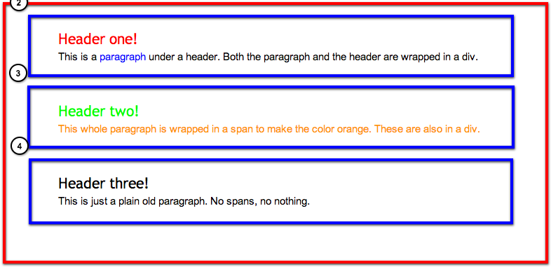
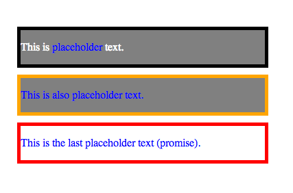

Ryan Wagner
Fancy Definition: A div is the basic structural element of any web page. It's used to define a division in a document.
Source: w3schools.com
Courtesy: http://www.qualityquotes.co.za/
This is a header!
This is some text under the header!
This is a sub header.
The sub header is less impressive.
Technical Definition: The <span> tag is used to group inline-elements in a document.
My mother has blue eyes.
My mother hasblue eyes. Using Divs, headers, paragraphs, and spans, create a basic page that looks like this:
Cascading Style Sheets is a style sheet language used for describing the presentation semantics of a document written in a markup language
Credit: hyperboleandahalf.blogspot.com
An ID takes the following form:
This is really important!Use an ID on something you only intend to have one of per page.
A CSS class looks a lot like an ID:
This Div is probably tinted. Classes are used in cases where you intend to use that styling multiple times.
ID's and Classes can be combined for fun and profit. You can even have multiple classes on the same element.
The content of this div will have the CSS from all of the classes
and the ID on it.
A type selector is simply targeting everything of a specific type. <h1>, <p>, <div>, and <span> are all examples of things that can be universally targeted.
Using the previous example, apply the hero id to the first div, and then apply the classes tinted and bordered to the divs in any combination you want.
Importing an external sheet is the most popular way to get CSS onto a page.
Create a new document called "my-styles.css", and use the code
#hero {
color: orange;
}
.tinted {
background-color: gray;
}
.bordered {
border: 1px solid black;
}
div {
margin: 10px;
}
Using everything you've learned so far, create the following.
Hint: The borders are 5px and divs have a 10px margin.